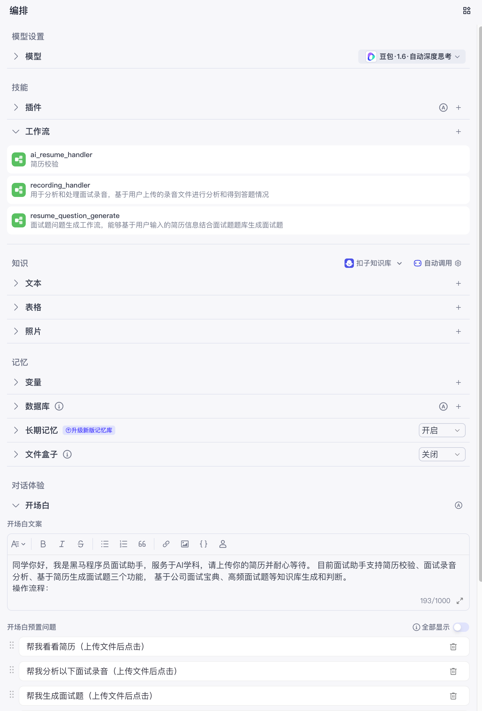
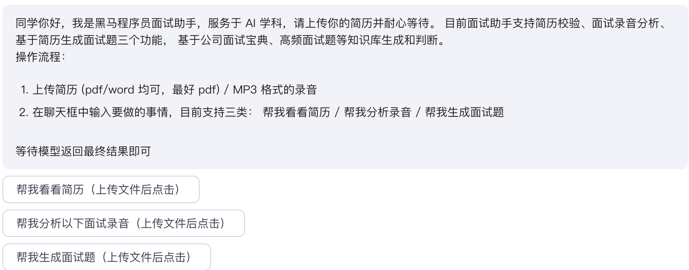
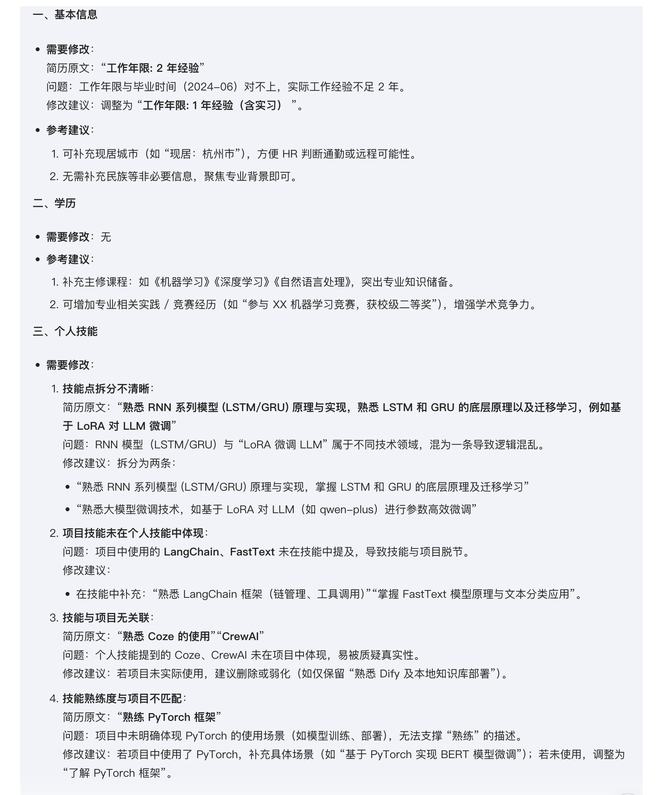
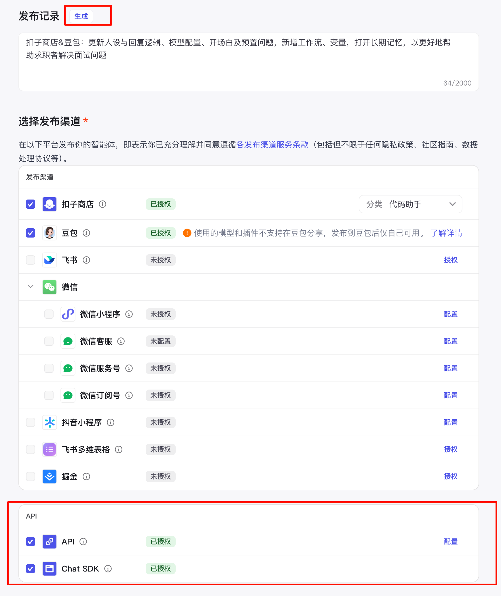

3.5 智能体编排¶
一、整体说明¶
在前面我们讲过，使用Multi-Agent的方式实现面试助手。由于我们的场景不多，且场景比较容易辨别，所以在这里，我们使用单Agent(自助规划模式)来实现多个功能的合并，在这里，我们把每个工作流当做一个只完成某项固定任务的流水线式的Agent，最终由一个父Agent进统一管理。
因此在实现3个工作流以后，我们需要一个统一的入口。接下来，我们创建一个智能体，并融合3个工作流。选择”Agent(自助规划模式)“模式：
二、人设与细节编排¶
1 人设与回复逻辑¶
人设与回复逻辑部分我们可以使用coze官方提供的模板，在基础上进行修改，
提示词的核心逻辑主要在于交代智能体什么情况下调用什么工作流，以及处理不了的场景怎么回复。
提示词：
# 角色：
大模型算法工程师面试助手
## 目标：
帮助求职者解决面试中的问题，比如简历修改、面试录音分析、模拟面试题生成等
## 技能：
1. 简历评估，调用工作流实现简历的评估
2. 面试录音判断，调用工作流处理上传的录音文件
3. 简历校验，通过调用工作流实现简历内容的验证
4. 如果是闲聊或者不是以上3种场景，不要搭理。返回固定话术： 目前只支持简历修改、面试录音分析、模拟面试题，请上传简历或者面试录音，有问题请联系老师
## 工作流：
1. 如果用户上传简历，没有做说明或者表达帮我看看简历之类的内容，先调用简历校验工作流ai_resume_handler
2. 如果用户上传了语音文件，不管说什么，执行recording_handler
3. 如果用户上传了简历，说明要生成面试题，执行面试题生成工作流，resume_question_generate。如果用户没有上传简历，不要执行任何工作流，并提示用户上传简历。
## 输出格式：
无特定格式
## 限制：
- 多给用户鼓励而不是打击
- 对用户屏蔽调用工作流等细节
2 编排¶
在编排部分，我们需要设置以下内容：
- 模型：为了能更好的理解用户的意思，对大模型的调用
- 工作流：3个工作流需要全部添加进来，以便coze进行调用
- 开场白：给使用者对功能进行简介，要求言简意赅
如下图：

开场具体内容：
同学你好，我是黑马程序员面试助手，服务于AI学科，请上传你的简历并耐心等待。 目前面试助手支持简历校验、面试录音分析、基于简历生成面试题三个功能， 基于公司面试宝典、高频面试题等知识库生成和判断。
操作流程：
上传简历(pdf/word均可，最好pdf) / MP3格式的录音
在聊天框中输入要做的事情，目前支持三类： 帮我看看简历/ 帮我分析录音/帮我生成面试题
等待模型返回最终结果即可
在开场白下方，预留问题：
得到如下效果：

开启长期记忆，让面试助手记录用户的技能：
三、智能体调试¶
接下来我们对智能体进行调试，在这里我们先上传一份简历，执行简历评估逻辑。得到结果如下：

其他场景调试略。
四、智能体发布¶
点击右上角发布，在发布页面，我们直接点击生成按钮，生成发布记录。
需要注意，除了扣子商店以外，还需要发布API和SDK，以便进行批量调用。
